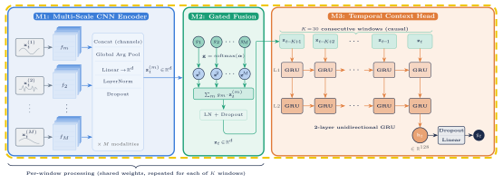
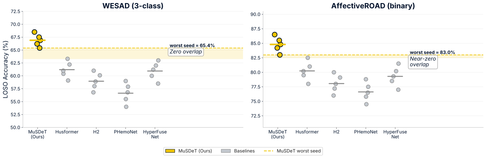
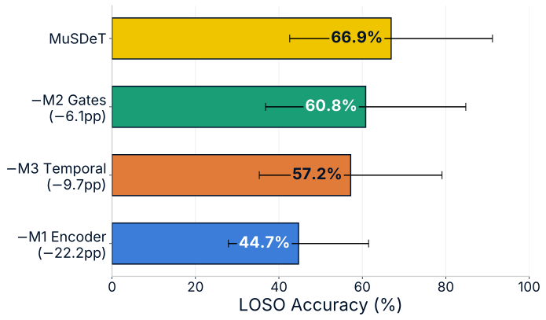
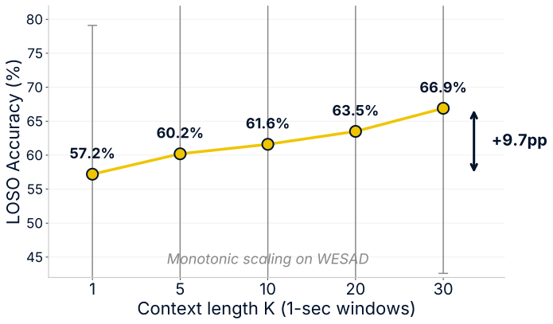

- Physiological patterns span multiple time scales. Heart rate changes rapidly; EDA and temperature drift slowly. Single-kernel CNNs capture one scale, not both → M1: multi-scale CNN encoder.
- Sensors vary in informativeness. EDA tracks arousal; ECG is sensitive to motion artifacts; sampling rates vary by 175× across sensors. Equal-weight fusion ignores this → M2: learned modality gates.
- Stress evolves over time. Stress develops gradually and persists, but window-level models classify 1-second snapshots in isolation → M3: causal temporal context over K=30 past windows.

MuSDeT reaches 66.9% LOSO on WESAD — the worst seed stays above all baselines.
Protocol: leave-one-subject-out, zero/near-zero window overlap, 5 seeds.


